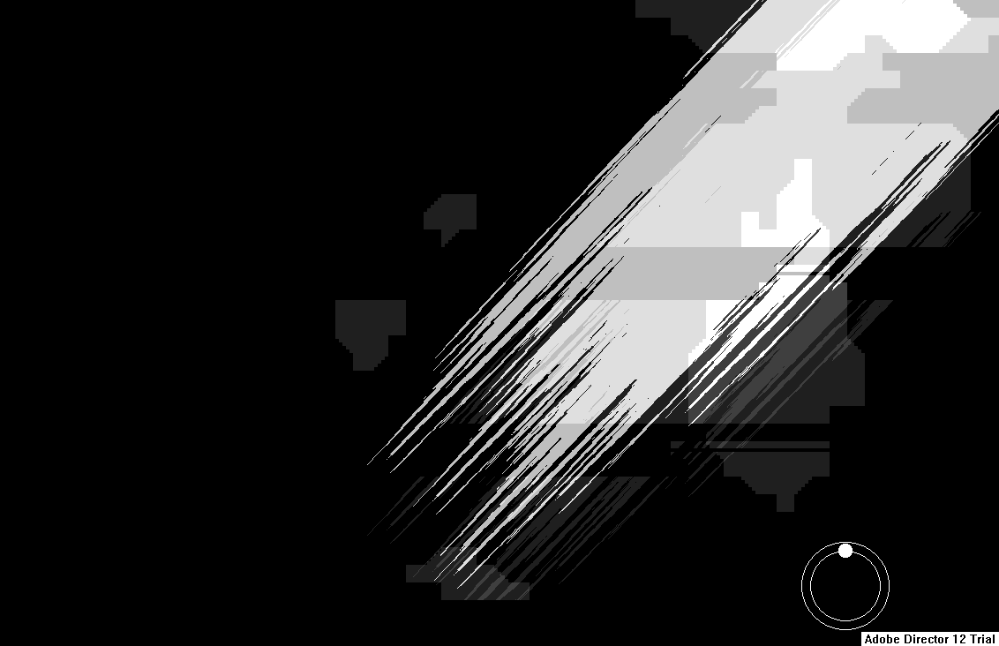

Corners of the canvas can be dragged by holding down keys C, V, B and N (up-left, up-right, down-right and down-left respectively). After deformation, folded canvas can be reapplied by pressing M. This will project deformed version onto main layer.
Once dragged, canvas corners are hard to return to their initial position. Deformation is reset by leaving and re-entering the light editor tab.
Deforming the canvas may deform some buttons in the main menu.
*Note: The light editor has a bug in which the border constraints (i.e. the view you can move with the numpad keys) is offset, often causing the upper and left areas of the room to be inaccessible in this editor. A workaround is to hold numpad9 while moving the view, which bypasses these restrictions. Alternatively, the PNG file found with the editor save txt in the LevelEditorProjects folder is the same as what appears in the light editor, and can be modified using an image editor.*